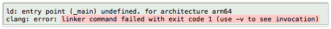

[iOS] AppDelegate의 역할과 메소드
-읽음
AppDelegate 의 역할
UITableViewDelegate를 구현하다 => UITableView에서 필요한 기능을 대신 구현하다
라는 느낌으로 AppDelegate는 App( Application ) 이 해야할 일을 대신 구현한다는 의미입니다.
여기에서 App이 해야할 일이란, Background 진입, Foreground 진입, 외부에서의 요청 (apns) 등을 말합니다.
@UIApplicationMain 은 뭘까요?
1 |
|
지워보면 알겠죠. 주석처리 해봅니다. 네 에러가 나죠.

실제로 앱은 UIApplication이라는 객체로 추상화 되어 Run Loop를 통해 프로그램 코드를 실행합니다. 개발자는 AppDelegate를 통해 UIApplication의 역할의 일부를 위임받아 UI를 그리면서 앱 다운 앱이 탄생합니다.
여기서 의문.
UIApplication은 AppDelegate.m 파일에 있는 AppDelegate 클래스가 본인의 역할을 위임받은 클래스인지 어떻게 알까요?
보통 tableView.delegate = {UITableViewDelegate를 구현한 객체} 이런식으로 Delegate를 연결하죠.
그런데 앱을 실행할 때,,, UIApplication객체를 가져와서 delegate를…..
결론은 @UIApplication 어노테이션입니다.
@UIApplication 어노테이션이 붙은 사용자 정의 클래스를 UIApplication의 delegate로 사용합니다.
UIWindow
1 | var window: UIWindow? |
AppDelegate클래스를 보면 유일한 변수가 하나 있습니다. window
UIWindow 클래스이며 Optional로 nil을 가질 수 있습니다.
스토리보드 기반의 앱으로 구동되면 시스템에서 UIWindow객체를 할당하여 초기화하며, 코드기반의 경우 didFinishLaunchingWithOptions 타이밍에 직접 생성해줘야 합니다.
UIWindow 는 View를 담는 컨테이너 역할이며 다른 포스팅에서 더 자세히 다루도록 합니다.
AppDelegate 메소드로 보는 iOS LifeCycle
1. 앱 실행
1 | func application(_ application: UIApplication, didFinishLaunchingWithOptions launchOptions: [UIApplicationLaunchOptionsKey: Any]?) -> Bool { |
앱을 실행하면 호출되는 delegate 메소드. launchOptions 파라미터로 앱이 실행되게 된 이유 (푸시를 통한 실행) 등이 포함되어 실행된다.
- return은 왜 true로 고정되어 있을까?
false로 바꿔도 앱은 정상적으로 실행되며, 아무 문제 없다.
return 값은 앱이 URL ( App Scheme ) 으로 실행된 경우 유효하다. URL로 실행 된 경우 launchOptions에 URL이 넘어오며 return을 false로 하면 openURL로 url을 오픈하지 않고 넘어간다.
- 좀 더 연구가 필요!
2. 앱 활성화
1 | func applicationDidBecomeActive(_ application: UIApplication) { |
앱이 화면에 뜬 이후 실행되는 메소드. 사실 WillBecomeActive도 있지만 자주 사용하지 않아서인지 AppDelegate에 기본적으로 override된 메소드는 applicationDidBecomeActive 였다.
앱이 백그라운드로 간 이후, 다시 포어그라운드로 올라온 이후에도 실행되는 메소드입니다.
3. 홈 버튼을 누르면
1 | func applicationWillResignActive(_ application: UIApplication) { |
홈 버튼을 누르면 앱은 백그라운드로 이동합니다. 가장 먼저 App이 포커스를 잃으면서 실행되는 메소드입니다.
템플릿 설명에 다르면 태스크 일시정지, 타이머 비활성화, 게임의 경우 일시정지를 처리하는 로직을 구현해야 하는 메소드입니다.
4. 백그라운드로 이동 후 (화면에서 앱 안보임)
1 | func applicationDidEnterBackground(_ application: UIApplication) { |
앱이 백그라운드로 이동하여 더이상 앱이 보이지 않은 이후 호출되는 메소드.
이 메소드에서는 공유자원 해제, 유저 데이터 저장 등의 로직을 구현해야합니다.
5. 다시 앱 실행 (메모리에 아직 살아있는 경우)
1 | func applicationWillEnterForeground(_ application: UIApplication) { |
자주 사용하는 메소드입니다.
앱이 다시 포어그라운드로 올라올 때 호출되는 메소드로, 보통 API를 통해 앱의 상태를 갱신할 때 사용합니다. 버전체크, 메인테이닝 체크 등..